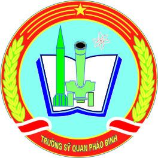
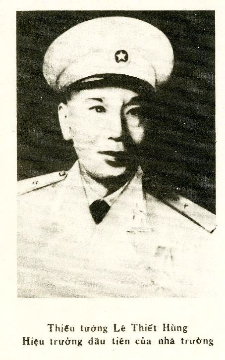
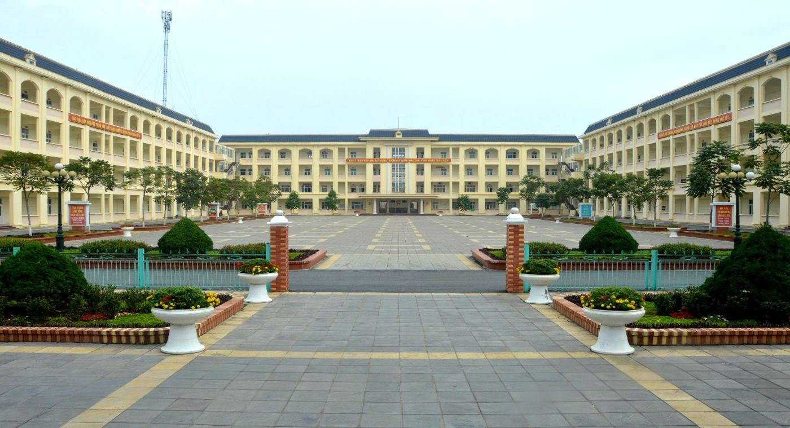
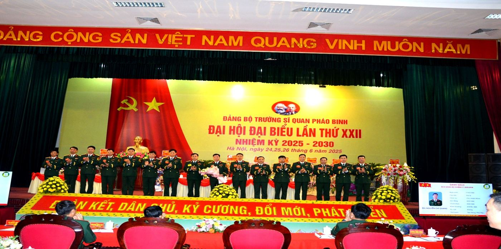
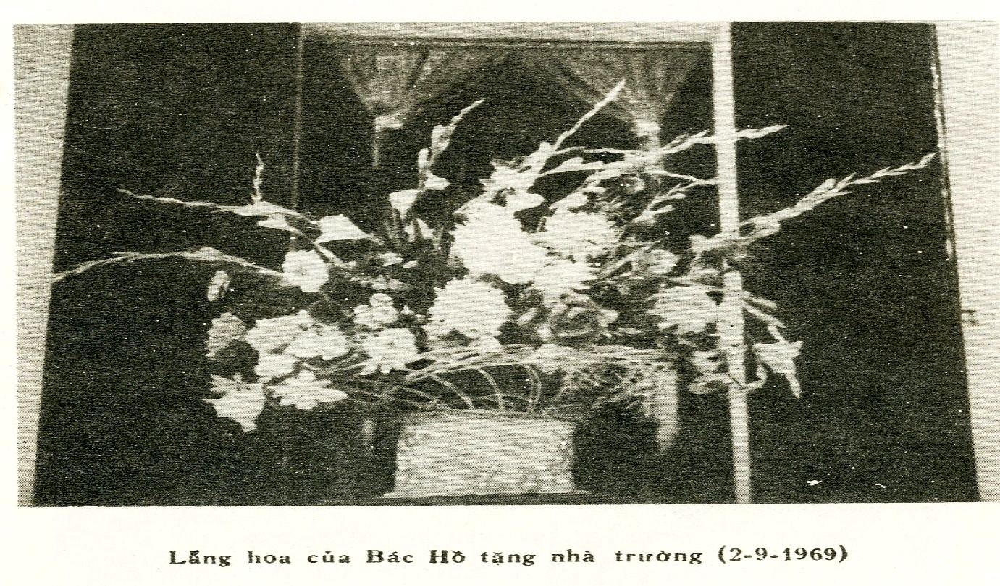
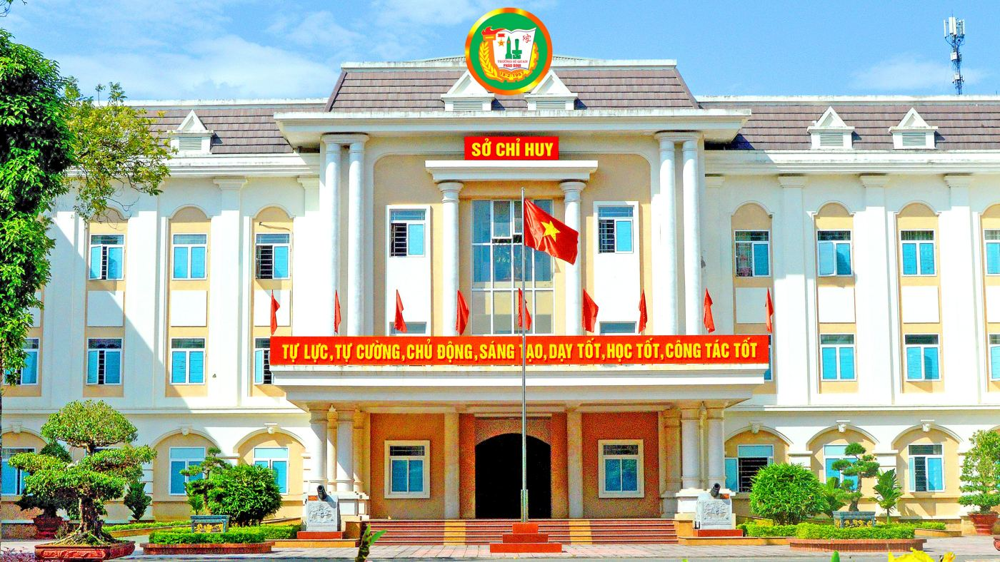
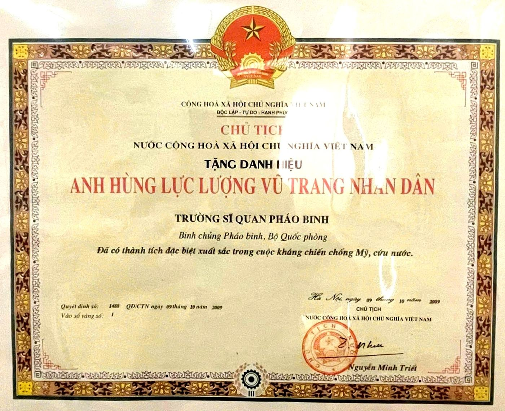
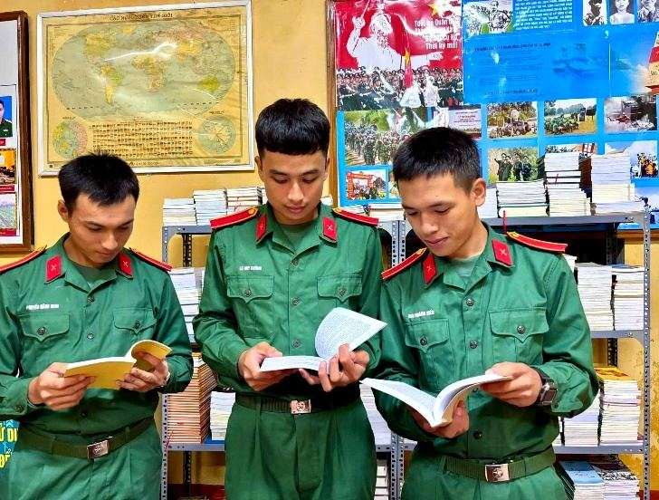
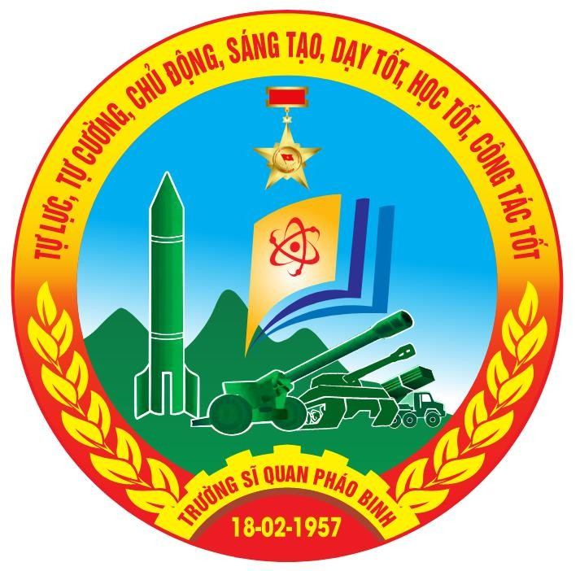

- Đảng ủy Phòng TM-HC
- Trung úy Nguyễn Việt Đức
- Trung tá, CN Phùng Thị Gấm
- Đại úy, CN Nguyễn Minh Hải
Mục lục
- Mở đầu
- Câu 1Đồng chí cho biết ngày, tháng, năm thành lập và tên gọi tiền thân của Trường sĩ quan Pháo binh? Ai là Hiệu trưởng, Phó Hiệu trưởng đầu tiên của nhà trường?
- Câu 2Đồng chí nêu sứ mệnh và nhiệm vụ chính trị trung tâm hiện nay của Nhà trường? Các đối tượng Nhà trường đã đào tạo trong 70 năm qua?
- Câu 3Từ ngày thành lập đến nay, Đảng bộ Nhà trường đã qua bao nhiêu kỳ Đại hội? Đại hội Đảng bộ gần nhất diễn ra vào ngày, tháng, năm nào? Chủ đề của Đại hội là gì? Có bao nhiêu đại biểu đại diện cho bao nhiêu tổ chức đảng tham dự Đại hội? Đại hội bầu Ban chấp hành gồm mấy đồng chí? Đồng chí nào được bầu làm Bí thư, Phó Bí thư và ủy viên Ban Thường vụ?
- Câu 4Truyền thống 70 năm xây dựng và trưởng thành của Nhà trường được nêu khái quát là gì? Đồng chí hãy nêu rõ những biểu hiện đặc trưng của truyền thống đó?
- Câu 5Đồng chí cho biết Nhà trường được tuyên dương Anh hùng lực lượng vũ trang vào thời điểm nào? Có bao nhiêu thành tích khen thưởng của Nhà trường trong 70 năm xây dựng, trưởng thành?
- Câu 6Đồng chí nêu rõ họ tên, thời gian giữ chức vụ của các đồng chí trong Ban Giám hiệu Nhà trường; các đồng chí có học hàm Phó giáo sư, học vị Tiến sĩ; những đồng chí đạt danh hiệu Nhà giáo nhân dân; anh hùng Lực lượng vũ trang của Nhà trường 70 năm qua? Khái quát trình độ học vấn của cán bộ, giáo viên Nhà trường hiện nay và chỉ tiêu phấn đấu đến năm 2030?
- Câu 7Trên cương vị học tập, công tác của bản thân, đồng chí hãy viết những suy nghĩ, cảm tưởng về truyền thống vẻ vang của Nhà trường, từ đó đồng chí và đơn vị cần phải làm gì để phát huy truyền thống, xây dựng Nhà trường trong thời gian tới?
- Tải vềMã QR và file Word bài dự thi

Trong suốt chiều dài lịch sử dựng nước và giữ nước của dân tộc, Quân đội nhân dân Việt Nam đã không ngừng trưởng thành, lớn mạnh, lập nên những chiến công vang dội. Trong hành trình vẻ vang ấy, Bộ đội Pháo binh luôn giữ vị trí quan trọng, là lực lượng hỏa lực chủ yếu của lục quân, góp phần to lớn vào sự nghiệp giải phóng dân tộc và bảo vệ Tổ quốc.Ngày 18/2/1957, Trường Sĩ quan Pháo binh được thành lập. Trải qua 70 năm xây dựng, chiến đấu và trưởng thành, Nhà trường đã vượt qua muôn vàn khó khăn, thử thách, hoàn thành xuất sắc nhiệm vụ giáo dục, đào tạo đội ngũ cán bộ chỉ huy Pháo binh cho Quân đội; xây đắp nên truyền thống “Tự lực, tự cường, chủ động sáng tạo, dạy tốt, học tốt, công tác tốt” và vinh dự được tuyên dương danh hiệu Anh hùng Lực lượng vũ trang nhân dân.
Kỷ niệm 70 năm Ngày truyền thống Nhà trường (18/2/1957 - 18/2/2027) là dịp để mỗi cán bộ, giảng viên, nhân viên, học viên, chiến sĩ nhìn lại chặng đường lịch sử vẻ vang, tri ân công lao của các thế hệ đi trước; đồng thời khơi dậy niềm tự hào, ý thức trách nhiệm, quyết tâm kế thừa và phát huy truyền thống, xây dựng Nhà trường ngày càng vững mạnh toàn diện.
Câu 1 Đồng chí cho biết ngày, tháng, năm thành lập và tên gọi tiền thân của Trường sĩ quan Pháo binh? Ai là Hiệu trưởng, Phó Hiệu trưởng đầu tiên của nhà trường?
Trả lời: Ngày 18 tháng 2 năm 1957, Bộ trưởng Bộ Quốc phòng kiêm Tổng Tư lệnh Quân đội nhân dân Việt Nam ra Nghị định 32/NĐA: tách Phân khoa Pháo binh thuộc Trường Sĩ quan Lục quân Việt Nam thành một trường trực thuộc Bộ Quốc phòng, Tổng Tư lệnh, lấy tên là Trường Sĩ quan Pháo binh Việt Nam, có nhiệm vụ đào tạo sĩ quan pháo binh mặt đất, pháo binh cao xạ và phụ trách các lớp tập huấn của Bộ Tư lệnh Pháo binh.
Ban lãnh đạo đầu tiên: Thiếu tướng Lê Thiết Hùng - Tư lệnh Binh chủng làm Hiệu trưởng; các đồng chí Phan Hàm và Phan Phác làm Phó Hiệu trưởng; đồng chí Nguyễn Lệnh làm Chủ nhiệm Chính trị kiêm Bí thư Ban cán sự Đảng. Cơ quan hiệu bộ gồm các phòng Chính trị, Cán bộ, Huấn luyện Pháo mặt đất, Huấn luyện Pháo cao xạ, Hậu cần và Ban Hành chính; các ban giáo viên Chiến thuật, Xạ kích, Binh thao.
Mục tiêu đào tạo ban đầu là bồi dưỡng chiến sĩ ưu tú và cán bộ từ tiểu đội đến đại đội thành sĩ quan pháo binh sơ cấp có đủ tài, đức, chỉ huy được từ trung đội đến đại đội pháo binh trong mọi tình huống chiến đấu. Địa điểm đầu tiên ở khu vực Quần Ngựa - Hà Nội, sau chuyển về thôn Sơn Lộc, xã Thái Học, huyện Tùng Thiện, tỉnh Sơn Tây (nay là phường Tùng Thiện, thành phố Hà Nội).

Thiếu tướng Lê Thiết Hùng - Hiệu trưởng đầu tiên của Nhà trường
* Những đơn vị tiền thân của Nhà trường
1. Phân khoa Pháo binh Trường Trung học Lục quân Trần Quốc Tuấn (1949 - 1957). Năm 1949, yêu cầu xây dựng bộ đội chủ lực đòi hỏi cấp thiết phải có cán bộ pháo binh. Tháng 5/1949, Bộ Quốc phòng thành lập Cục Pháo binh do kỹ sư Trần Đại Nghĩa làm Cục trưởng. Thực hiện chỉ thị của Bộ Tổng Tham mưu, Phân khoa Pháo binh được thành lập; đồng chí Tấn Dương (Ba Thi) làm Chủ nhiệm, đồng chí Lê Đình Lộ làm Chính trị viên. Ngày 01/5/1949, Phân khoa khai giảng khóa đầu tiên tại Giếng Tanh, xã Tuyên Hiên, huyện Yên Sơn, tỉnh Tuyên Quang. Sau 8 năm, Phân khoa hoàn thành 5 khóa, đào tạo 1.714 cán bộ - lực lượng nòng cốt xây dựng Binh chủng Pháo binh, khẳng định khả năng tự đào tạo cán bộ pháo binh trong Quân đội ta.
2. Trường Tập huấn Pháo binh - “Đội huấn luyện 351” (1954 - 1958). Sau Hiệp định Giơ-ne-vơ, lực lượng Pháo binh phát triển nhảy vọt, đặt ra yêu cầu cấp bách huấn luyện chuyển binh chủng và tập huấn cán bộ. Ngày 15/11/1954, theo Nghị định 39/NĐ-A, Trường Tập huấn Pháo binh được thành lập tại Quần Ngựa - Cầu Giấy - Hà Nội, lấy tên “Đội huấn luyện 351”; Thiếu tướng Lê Thiết Hùng làm Giám đốc, đồng chí Nguyễn Nam Thắng làm Chính ủy, đồng chí Hà Tuấn Khanh làm Chỉ huy phó. Sau đó Trường chuyển về thành cổ Sơn Tây, mang phiên hiệu “Tiểu đoàn 13” (Chỉ huy trưởng Phan Hạo, Chính ủy Hoàng Cao). Phương châm huấn luyện: “Lý thuyết đi đôi với thực hành, dạy đúng đối tượng, huấn luyện những vấn đề chiến tranh cần”.
Trong gần 4 năm, Đội huấn luyện 351 hoàn thành 11 khóa chuyển binh chủng, 20 khóa tập huấn, 4 lớp bồi dưỡng giáo viên xạ kích, đào tạo gần 2.000 cán bộ pháo mặt đất và cao xạ; được tặng thưởng Huân chương Chiến công hạng Hai. Ngày 30/3/1958, theo chỉ thị của Bộ Quốc phòng, Đội huấn luyện 351 được sáp nhập vào Trường Sĩ quan Pháo binh.
Câu 2 Đồng chí nêu sứ mệnh và nhiệm vụ chính trị trung tâm hiện nay của Nhà trường? Các đối tượng Nhà trường đã đào tạo trong 70 năm qua?
Trả lời:
1. Sứ mệnh và nhiệm vụ chính trị trung tâm
Trường Sĩ quan Pháo binh là trung tâm giáo dục, đào tạo sĩ quan của Quân đội nhân dân Việt Nam. Nhiệm vụ chính trị trung tâm của Nhà trường là giáo dục, đào tạo đội ngũ sĩ quan chỉ huy tham mưu Pháo binh cấp phân đội có bản lĩnh chính trị vững vàng, phẩm chất đạo đức tốt, kiến thức toàn diện và năng lực tổ chức thực hiện nhiệm vụ, đáp ứng yêu cầu xây dựng Quân đội cách mạng, chính quy, tinh nhuệ, hiện đại; đáp ứng yêu cầu về cán bộ cho các đơn vị Pháo binh trong toàn quân.
Cùng với nhiệm vụ trung tâm, Nhà trường thực hiện các nhiệm vụ: đào tạo, bồi dưỡng giáo viên, giảng viên và nhân viên chuyên môn kỹ thuật Pháo binh - Tên lửa; đào tạo cán bộ, giáo viên pháo binh quốc tế; nghiên cứu khoa học quân sự phục vụ đào tạo và sẵn sàng chiến đấu; giáo dục chính trị, tư tưởng; xây dựng Đảng bộ trong sạch, vững mạnh (nhiệm vụ then chốt) và xây dựng Nhà trường vững mạnh toàn diện “Mẫu mực, tiêu biểu”; sẵn sàng chiến đấu, cứu hộ, cứu nạn, khắc phục hậu quả thiên tai và các nhiệm vụ khác; tham gia đối ngoại quốc phòng theo phân công của cấp trên.

Giảng đường Trường Sĩ quan Pháo binh
2. Các đối tượng Nhà trường đã đào tạo trong 70 năm qua
| 1. Chỉ huy quân sự PB dài hạn (3 năm) | 2. Chính trị PB dài hạn (3 năm) | 3. Ngắn hạn quân sự PB (1 năm) |
|---|---|---|
| 4. Ngắn hạn chính trị PB (1 năm) | 5. CHPĐ bậc cao đẳng (đã dừng) | 6. CHPĐ bậc đại học (5 năm và 4 năm) |
| 7. Ngắn hạn Tiểu đoàn trưởng (đã dừng) | 8. Bổ túc CHTM Trung (lữ) đoàn (đã dừng) | 9. Trung đội trưởng pháo cối theo Chỉ thị 801 (đã dừng) |
| 10. CHPĐ cao đẳng (từ đối tượng 801) | 11. Chính trị PĐ cao đẳng (từ ĐT 801) | 12. CHPĐ cao đẳng xét tuyển NV2 |
| 13. Hoàn thiện cao đẳng (từ ĐT ngắn hạn) | 14. Hoàn thiện đại học | 15. CHPĐ - Lào (3 năm) |
| 16. CHPĐ - Lào (đại học) | 17. CHPĐ - Campuchia (3 năm) | 18. CHPĐ - Campuchia (đại học) |
| 19. Chuyển loại cán bộ chính trị (đã dừng) | 20. Đào tạo giáo viên chuyên ngành PB | 21. Chuyển loại sĩ quan tên lửa mặt đất, tên lửa chống tăng |
| 22. Hạ sĩ quan (khẩu đội, tiểu đội trưởng) | 23. Bồi dưỡng NVCMKT tên lửa | 24. NVCMKT (lái xe, thợ xe, thợ pháo, quang học) |
| 25. Sĩ quan dự bị | 26. Nhân viên chuyên môn kỹ thuật tên lửa | 27. Bồi dưỡng kiến thức quốc phòng |
| 28. Chuyển loại xe xích, máy kéo | 29. Tập huấn PB cho bạn Lào, Campuchia | 30. Sĩ quan văn bằng 2 (từ năm 2016) |
3. Một số dấu mốc đào tạo tiêu biểu
Ngày 08/11/1957 khai giảng Khóa 1 đào tạo cán bộ sơ cấp quân sự pháo binh dài hạn; ngày 14/4/1959 bế giảng với gần 800 sĩ quan, 80% khá, giỏi. Từ Khóa 2 đến Khóa 5 có 1.780 học viên tốt nghiệp. Giai đoạn 1965 - 1968 hoàn thành 26 khóa, 2.678 học viên ra trường bổ sung kịp thời cho chiến trường. Thời kỳ chống Mỹ (1965 - 1975), Nhà trường đào tạo, bổ túc 6.009 cán bộ sơ cấp, 616 cán bộ trung cấp, 250 giáo viên, 301 sĩ quan dự bị và nhiều khóa cho bạn quốc tế.
Tháng 7/1995, Nhà trường được công nhận là trường đào tạo sĩ quan phân đội bậc Cao đẳng; ngày 21/9/1998 được Chính phủ giao đào tạo bậc Đại học - Khóa 36 tốt nghiệp cử nhân quân sự pháo binh năm 1999. Từ năm 2016 đào tạo sĩ quan văn bằng 2; từ năm học 2020 - 2021 đào tạo sĩ quan chỉ huy phân đội giai đoạn 1. Giai đoạn 2017 - 2022 tiếp nhận 26 đối tượng, 119 lượt khóa với 6.123 học viên, tỷ lệ khá, giỏi 89,6%; các khóa học viên Lào, Campuchia đạt khá, giỏi trên 80%.
Câu 3 Từ ngày thành lập đến nay, Đảng bộ Nhà trường đã qua bao nhiêu kỳ Đại hội? Đại hội Đảng bộ gần nhất diễn ra vào ngày, tháng, năm nào? Chủ đề của Đại hội là gì? Có bao nhiêu đại biểu đại diện cho bao nhiêu tổ chức đảng tham dự Đại hội? Đại hội bầu Ban chấp hành gồm mấy đồng chí? Đồng chí nào được bầu làm Bí thư, Phó Bí thư và ủy viên Ban Thường vụ?
Trả lời:
Từ khi thành lập đến nay, Đảng bộ Nhà trường đã tiến hành 22 kỳ Đại hội. Đại hội lần thứ I họp ngày 28/9/1959; các kỳ Đại hội tiếp theo đều đề ra chủ trương lãnh đạo sát với yêu cầu từng thời kỳ: Đại hội lần thứ II (13/6/1960) được Đại tướng Nguyễn Chí Thanh về dự và chỉ đạo; Đại hội lần thứ V (18/7/1966) khẳng định Nhà trường chuyển hướng phù hợp thời chiến, đào tạo cán bộ “số lượng đông, chất lượng tốt, thời gian ngắn”; Đại hội lần thứ XI (4/1979) đề ra chủ trương từng bước đưa Nhà trường lên bậc đại học; Đại hội lần thứ XX (2015) có 160 đại biểu của 19 tổ chức cơ sở đảng; Đại hội lần thứ XXI diễn ra từ ngày 30/6 đến 02/7/2020.
* Đại hội đại biểu Đảng bộ Nhà trường lần thứ XXII, nhiệm kỳ 2025 - 2030
- Thời gian: từ ngày 24 đến ngày 26 tháng 6 năm 2025.
- Chủ đề (phương châm): “Đoàn kết, dân chủ, đổi mới, kỷ cương, phát triển”.
- Kết quả bầu cử: Ban Chấp hành Đảng bộ gồm 15 đồng chí; Ban Thường vụ 05 đồng chí; Ủy ban Kiểm tra 05 đồng chí. Đồng chí Nguyễn Đức Hiền - Chính ủy được bầu làm Bí thư Đảng ủy; đồng chí Kiều Hữu Kiên - Hiệu trưởng là Phó Bí thư Đảng ủy. Đại hội bầu đoàn đại biểu gồm 46 đại biểu chính thức và 2 đại biểu dự khuyết, đại diện cho 1.090 đảng viên của Đảng bộ đi dự Đại hội Đảng bộ Binh chủng lần thứ XV.
- Ban Thường vụ Đảng ủy (05 đồng chí): Nguyễn Đức Hiền, Kiều Hữu Kiên, Phạm Văn Tuấn, Phạm Quang Tạo, Phạm Văn Hiển.
- Ủy ban Kiểm tra (05 đồng chí): Phạm Văn Tuấn, Chu Văn Hùng, Cấn Đình Hải Minh, Lê Mạnh Chiến, Đỗ Minh Dũng.
- Ban Chấp hành Đảng bộ (15 đồng chí):
| 1. Kiều Hữu Kiên | 2. Nguyễn Đức Hiền | 3. Phạm Văn Tuấn |
|---|---|---|
| 4. Phạm Quang Tạo | 5. Dương Đình Hồng | 6. Phạm Văn Hiển |
| 7. Chu Văn Hùng | 8. Phạm Minh Thăng | 9. Cấn Đình Hải Minh |
| 10. Đoàn Văn Tâm | 11. Nguyễn Trí Quang | 12. Dương Xuân Thể |
| 13. Trịnh Văn Cừ | 14. Đoàn Anh Tuấn | 15. Trịnh Đình Thanh |

Ban Chấp hành Đảng bộ Trường Sĩ quan Pháo binh nhiệm kỳ 2025 - 2030
Đại hội xác định: giáo dục - đào tạo, nghiên cứu khoa học là nhiệm vụ trung tâm; xây dựng Đảng bộ trong sạch, vững mạnh là then chốt; xây dựng Nhà trường vững mạnh toàn diện “Mẫu mực, tiêu biểu” là nhiệm vụ xuyên suốt, theo phương châm “Chất lượng đào tạo của Nhà trường là khả năng sẵn sàng chiến đấu của đơn vị”.
Câu 4 Truyền thống 70 năm xây dựng và trưởng thành của Nhà trường được nêu khái quát là gì? Đồng chí hãy nêu rõ những biểu hiện đặc trưng của truyền thống đó?
Trả lời:
Nhìn lại chặng đường 70 năm, các thế hệ cán bộ, học viên, chiến sĩ Nhà trường đã phấn đấu gian khổ, đi lên từ không đến có, từ nhỏ đến lớn, xây đắp nên truyền thống: “Tự lực, tự cường, chủ động sáng tạo, dạy tốt, học tốt, công tác tốt”. Truyền thống đó được thể hiện:
- Ý chí tự lực, tự cường trong mọi lĩnh vực, trên mọi mặt công tác: dù gặp nhiều khó khăn, Nhà trường đã tự tìm lấy sức mạnh của chính mình, sức mạnh của khối đoàn kết thống nhất cao của toàn Trường và sự giúp đỡ to lớn của cấp trên, của đơn vị bạn và địa phương để vượt qua gian khổ, hoàn thành xuất sắc mọi nhiệm vụ được giao, không ngừng trưởng thành, vững bước đi lên.
- Tinh thần chủ động, sáng tạo khắc phục khó khăn, dám nghĩ, dám làm, vươn lên làm chủ khoa học kỹ thuật; nhất là các phong trào nghiên cứu khoa học, phát huy sáng kiến, cải tiến kỹ thuật với nhiều đề tài, công trình có giá trị thực tiễn cao, được đưa vào giảng dạy trong Nhà trường, huấn luyện ở các đơn vị Pháo binh toàn quân và áp dụng rộng rãi.
- Truyền thống dạy tốt, học tốt, công tác tốt đã trở thành động lực to lớn nâng cao chất lượng xây dựng Nhà trường vững mạnh toàn diện, luôn nhận và hoàn thành xuất sắc mọi nhiệm vụ. Từ nâng cao chất lượng giáo dục - đào tạo, xây dựng chính quy, rèn luyện kỷ luật đến xây dựng về chính trị tư tưởng đều được lãnh đạo, chỉ đạo, tổ chức thực hiện chặt chẽ. Chính từ truyền thống đó đã sản sinh ra nhiều cán bộ Pháo binh, tướng lĩnh, nhà giáo nhân dân, nhà giáo ưu tú, giáo viên dạy giỏi, cán bộ quản lý học viên tốt và học viên tiêu biểu xuất sắc.

Lẵng hoa Bác Hồ tặng Nhà trường ngày 02/9/1969
* Truyền thống được khẳng định qua từng chặng đường lịch sử
Trong kháng chiến chống Mỹ, cứu nước, Nhà trường vừa sơ tán, vừa xây dựng, vừa huấn luyện, chuyển hướng phù hợp với thời chiến để đào tạo cán bộ “số lượng đông, chất lượng tốt, thời gian ngắn”. Giai đoạn 1965 - 1975, Nhà trường đào tạo, bổ túc 6.009 cán bộ sơ cấp, 616 cán bộ trung cấp, 250 giáo viên và nhiều khóa cho bạn quốc tế. Ngày 02/9/1969, Nhà trường vinh dự được Bác Hồ tặng lẵng hoa - phần thưởng vô giá, nguồn động viên to lớn đối với các thế hệ cán bộ, giáo viên, học viên.
Trong thời kỳ đổi mới, phát huy tinh thần chủ động, sáng tạo, Nhà trường từng bước nâng cao trình độ đào tạo: năm 1995 được công nhận là trường đào tạo sĩ quan phân đội bậc cao đẳng; năm 1998 được Chính phủ giao đào tạo bậc đại học; từ năm 2016 đào tạo sĩ quan văn bằng 2. Phong trào nghiên cứu khoa học, sáng kiến cải tiến kỹ thuật phát triển mạnh, đóng góp thiết thực cho huấn luyện của bộ đội Pháo binh toàn quân.

Trường Sĩ quan Pháo binh hôm nay
Truyền thống vẻ vang ấy được xây đắp, đúc kết từ thực tiễn 70 năm xây dựng và trưởng thành, có sức cổ vũ, động viên mạnh mẽ để mỗi cán bộ, giáo viên., học viên, quân nhân chuyên nghiệp, công nhân viên, hạ sĩ quan - binh sĩ của Nhà trường, dù đang công tác, học tập tại Trường hay ở những cương vị khác nhau, luôn giữ gìn, trân trọng và phát huy.
Câu 5 Đồng chí cho biết Nhà trường được tuyên dương Anh hùng lực lượng vũ trang vào thời điểm nào? Có bao nhiêu thành tích khen thưởng của Nhà trường trong 70 năm xây dựng, trưởng thành?
Trả lời:
Ngày 09/10/2009, Nhà trường vinh dự được Chủ tịch nước phong tặng danh hiệu “Anh hùng Lực lượng vũ trang nhân dân” thời kỳ kháng chiến chống Mỹ, cứu nước (Quyết định số 1488/QĐ-CTN, Chủ tịch nước Nguyễn Minh Triết ký).

Bằng công nhận danh hiệu Anh hùng Lực lượng vũ trang nhân dân
Trong 70 năm, Nhà trường đã hoàn thành đào tạo, bồi dưỡng hàng trăm khóa học, đáp ứng kịp thời yêu cầu xây dựng và chiến đấu của bộ đội Pháo binh qua các thời kỳ và làm tròn nhiệm vụ quốc tế; nhiều đồng chí trưởng thành là tướng lĩnh, cán bộ giữ trọng trách trong Quân đội và các cơ quan Đảng, Nhà nước. Với những thành tích đó, Nhà trường được Đảng, Nhà nước, Quân đội và các nước bạn tặng thưởng:
- 02 Huân chương Quân công (hạng Nhất, hạng Ba);
- 08 Huân chương Chiến công (02 hạng Nhất, 03 hạng Nhì, 03 hạng Ba);
- 03 Huân chương Bảo vệ Tổ quốc hạng Nhì; 01 Huân chương Lao động hạng Ba;
- 01 Huân chương “Tự do” (Xa-La-Lợt) hạng Nhất của Nhà nước CHDCND Lào; 01 Huân chương “Hữu nghị” hạng Nhất của Nhà nước Campuchia;
- Lẵng hoa của Chủ tịch Hồ Chí Minh (1969), Cờ thưởng luân lưu của Bác Tôn; Cờ thi đua của Chính phủ (2008), Cờ thi đua của Bộ Quốc phòng (2007, 2018), Cờ thi đua của Bộ Tư lệnh Pháo binh (2017); năm 1985 được công nhận đơn vị Lá cờ đầu, nhận vĩnh viễn cờ thưởng luân lưu của Bộ Quốc phòng;
- Nhiều cờ thưởng, bằng khen của Thủ tướng Chính phủ, Bộ Quốc phòng, Bộ Tổng Tham mưu, Tổng cục Chính trị, Bộ Giáo dục và Đào tạo, Bộ Tư lệnh Pháo binh và địa phương.
* Một số mốc khen thưởng tiêu biểu
| 1960 - Huân chương Chiến công hạng Hai | 1967 - Huân chương Chiến công hạng Nhất (1957-1967) |
|---|---|
| 1972 - Huân chương Lao động hạng Ba | 1977 - Huân chương Quân công hạng Ba |
| 1983 - 02 Huân chương Chiến công hạng Hai | 1984 - Huân chương Chiến công hạng Nhất |
| 1985 - Huân chương Quân công hạng Nhất | 2006, 2011 - Huân chương Bảo vệ Tổ quốc hạng Nhì |
| 2008 - Cờ thi đua của Chính phủ | 2009 - Danh hiệu Anh hùng LLVT nhân dân |
Giai đoạn 2023 - 2027, Nhà trường tiếp tục được Bộ Quốc phòng, Bộ Giáo dục và Đào tạo, Bộ Tổng Tham mưu, Tổng cục Chính trị và Bộ Tư lệnh tặng nhiều bằng khen về đổi mới sáng tạo trong giảng dạy, hội thi giảng viên (Giải Ba toàn đoàn năm 2024), Olympic các môn khoa học Mác - Lênin, bảo vệ nền tảng tư tưởng của Đảng, xây dựng xã hội học tập và công tác dân vận.
Câu 6 Đồng chí nêu rõ họ tên, thời gian giữ chức vụ của các đồng chí trong Ban Giám hiệu Nhà trường; các đồng chí có học hàm Phó giáo sư, học vị Tiến sĩ; những đồng chí đạt danh hiệu Nhà giáo nhân dân; anh hùng Lực lượng vũ trang của Nhà trường 70 năm qua? Khái quát trình độ học vấn của cán bộ, giáo viên Nhà trường hiện nay và chỉ tiêu phấn đấu đến năm 2030?
Trả lời:
A. Các đồng chí Hiệu trưởng
| 1. Lê Thiết Hùng (2/1957-cuối 1960) | 2. Phùng Thế Tài (cuối 1960-1/1962) | 3. Phan Hàm (1/1962-4/1963) |
|---|---|---|
| 4. Hoàng Văn Khánh (4/1963-9/1964) | 5. Nguyễn Hữu Mỹ (9/1964-10/1974) | 6. Trần Ngọc Anh, Q.HT (10/1974-3/1979) |
| 7. Nguyễn Văn Khiêu (3/1979-7/1988) | 8. Trương Hùng (7/1988-6/1995) | 9. Đinh Khắc Hiệu (6/1995-11/1998) |
| 10. Nguyễn Nghĩa (11/1998-7/2004) | 11. Trần Quyết Tiến (7/2004-4/2013) | 12. Nguyễn Du (4/2013-10/2017) |
| 13. Vũ Ký Vệ (10/2017-7/2022) | 14. Kiều Hữu Kiên (8/2022-nay) |
B. Các đồng chí Chính ủy (Phó Hiệu trưởng Chính trị)
| 1. Nguyễn Lệnh (1957-10/1958) | 2. Lê Ngọc Quang (10/1958-10/1960) | 3. Nông Quốc Tiến (10/1960-10/1973) |
|---|---|---|
| 4. Lê Trung (10/1973-5/1978) | 5. Nguyễn Kim Điện (5/1978-3/1981) | 6. Phan Viêm, CS2 (1980-1981) |
| 7. Trần Quang Lâm (3/1981-9/1987) | 8. Đỗ Son (9/1987-12/1988) | 9. Nguyễn Hoàng Mỗi (12/1988-5/1997) |
| 10. Bùi Minh Tiến (5/1997-7/2003) | 11. An Viết Bình (7/2003-5/2006) | 12. Nguyễn Đức Khải (6/2010-11/2013) |
| 13. Trần Văn Lý (12/2013-8/2016) | 14. Nguyễn Hoàng Nhiên (10/2016-4/2017) | 15. Trần Thu Truyền (4/2017-9/2021) |
| 16. Bùi Bắc Bình (10/2021-3/2025) | 17. Nguyễn Đức Hiền (3/2025-nay) |
C. Các đồng chí Phó Hiệu trưởng
| 1. Phan Hàm (1957) | 2. Phan Phác (1957) | 3. Hoàng Khải Tiến (1957-10/1964) |
|---|---|---|
| 4. Nguyễn Văn Thước (1965-1969) | 5. Nguyễn Tiến Tác (1971-1984) | 6. Vũ Đức Sinh (1977-1987) |
| 7. Hoàng Đỉnh (1978) | 8. Nguyễn Hữu Dần (1979-1988) | 9. Nguyễn Vàng |
| 10. Nguyễn Tuyên | 11. Phạm Đức Phỉ | 12. Cao Mạnh Tuấn |
| 13. Lưu Hưởng (1980-1981) | 14. Nguyễn Quang Phục (1981) | 15. Trần Kính (11/1981-4/1982) |
| 16. Trần Ngự (1982-1983) | 17. Nguyễn Sầm (1982-1987) | 18. Nguyễn Tiệp |
| 19. Nguyễn Đức Sắc (1983-1988) | 20. Nguyễn Quý Phong (6/1988-1/1992) | 21. Nguyễn Hữu Bội (1996-11/2000) |
| 22. Nguyễn Đình Sơn (12/1998-2009) | 23. Nguyễn Du (2003-2013) | 24. Ngô Văn Tầm (2013-8/2017) |
| 25. Võ Huy Chinh (2009-2016) | 26. Vũ Ký Vệ (11/2016-9/2017) | 27. Vũ Quyết Tiến (12/2016-02/2020) |
| 28. Trần Đức Hùng (03/2020-12/2022) | 29. Dương Đình Hồng (01/2023-nay) | 30. Phạm Quang Tạo (6/2022-nay) |
D. Phó Chính ủy
Nguyễn Văn Đoài (2006-2010); Trần Văn Lý (2011-2013); Nguyễn Hoàng Nhiên (2013-10/2016); Trần Thu Truyền (10/2016-03/2017); Bùi Bắc Bình (04/2017-9/2021); Phạm Văn Tuấn (10/2021-nay).
E. Học hàm Phó giáo sư, học vị Tiến sĩ
Phó giáo sư, Tiến sĩ (06 đồng chí): Trần Quyết Tiến, Nguyễn Du, Vũ Ký Vệ, Ngô Văn Tầm, Phạm Quang Tạo (2024), Kiều Hữu Kiên (2025).
Tiến sĩ qua các thời kỳ (40 đồng chí): Trần Quyết Tiến, Nguyễn Du, Trần Văn Tầm, Vũ Ký Vệ, Kiều Hữu Kiên, Phạm Quang Tạo, Nguyễn Hoàng Nhiên, Đỗ Văn Tiến, Trần Văn Lý, Trần Thu Truyền, Trần Quyết Tiến, Nhữ Đình Lưu, Phạm Văn Tuấn, Phạm Bá Tuấn, Nguyễn Đình Lanh, Vương Quốc Quân, Mạc Đăng Tiến, Bùi Văn Cơ, Cao Việt Hòa, Nguyễn Đình Thành, Nguyễn Thế Vinh, Đỗ Tất Nghĩa, Trần Văn Chuyền, Tạ Duy Bình, Nguyễn Minh Châu, Phạm Văn Hiển, Ngô Ngọc Thắng, Nguyễn Viết Điệp, Lê Thị Dung, Nguyễn Văn Hà, Nguyễn Thị Minh Thu, Trần Đức Long, Nguyễn Văn Tâm, Nguyễn Văn Tuyển, Nguyễn Văn Hội, Đỗ Thanh Bình, Cấn Đình Hải Minh, Nguyễn Văn Thanh, Nguyễn Thế Thái, Phùng Mạnh Hùng.
F. Nhà giáo nhân dân, Nhà giáo ưu tú, Anh hùng LLVT nhân dân
- Nhà giáo nhân dân: đồng chí Đinh Khắc Hiệu - nguyên Hiệu trưởng Nhà trường.
- Nhà giáo ưu tú (07 đồng chí): Nguyễn Văn Khiêu; Nguyễn Hữu Bội; Trần Đức Lũng; Đỗ Viết Huy; Nguyễn Thị Oanh; Vũ Ký Vệ; Vũ Văn Tứ.
- Anh hùng Lực lượng vũ trang nhân dân: Đại tá Phùng Văn Khầu - nguyên Tiểu đoàn trưởng.
G. Trình độ học vấn của cán bộ, giáo viên hiện nay và chỉ tiêu đến năm 2030
Tính đến tháng 9/2026: 412/413 cán bộ, giảng viên có trình độ đại học trở lên (99,76%); 205 đồng chí sau đại học (49,63%), gồm 40 tiến sĩ, 185 thạc sĩ; 07 nhà giáo giỏi cấp Bộ Quốc phòng, 90 giảng viên giỏi, cán bộ quản lý tốt cấp cơ sở. Đến năm 2030, Nhà trường phấn đấu tiếp tục chuẩn hóa đội ngũ, nâng cao tỷ lệ giảng viên có trình độ sau đại học, tiến sĩ và giáo viên dạy giỏi các cấp.
Câu 7 Trên cương vị học tập, công tác của bản thân, đồng chí hãy viết những suy nghĩ, cảm tưởng về truyền thống vẻ vang của Nhà trường, từ đó đồng chí và đơn vị cần phải làm gì để phát huy truyền thống, xây dựng Nhà trường trong thời gian tới?
Trả lời:
PHÁT HUY TRUYỀN THỐNG 70 NĂM VẺ VANG, QUYẾT TÂM XÂY DỰNG TRƯỜNG SĨ QUAN PHÁO BINH NGÀY CÀNG VỮNG MẠNH
Trải qua 70 năm xây dựng, chiến đấu, trưởng thành và phát triển, Trường Sĩ quan Pháo binh đã viết nên những trang sử vẻ vang, hun đúc nên truyền thống tốt đẹp, trở thành niềm tự hào của các thế hệ cán bộ, giảng viên, nhân viên, học viên, chiến sĩ. Điều để lại trong chúng tôi nhiều xúc động nhất là ý chí vượt khó, tinh thần tự lực, tự cường và sự cống hiến bền bỉ của các thế hệ đi trước: từ những ngày đầu thành lập với muôn vàn thiếu thốn, qua các cuộc kháng chiến đến thời kỳ hòa bình, đổi mới, Nhà trường luôn chủ động, sáng tạo, hoàn thành tốt mọi nhiệm vụ được giao.
Truyền thống “Tự lực, tự cường, chủ động, sáng tạo, dạy tốt, học tốt, công tác tốt” không đơn thuần là khẩu hiệu thi đua mà là phương châm hành động. “Tự lực, tự cường” là không trông chờ, ỷ lại; “Chủ động, sáng tạo” là không ngừng đổi mới tư duy, dám nghĩ, dám làm, dám chịu trách nhiệm; “Dạy tốt, học tốt, công tác tốt” là yêu cầu xuyên suốt, thể hiện quyết tâm nâng cao chất lượng giáo dục, đào tạo và hoàn thành tốt mọi nhiệm vụ. Trong bối cảnh Cách mạng công nghiệp lần thứ tư, chuyển đổi số đã trở thành yêu cầu tất yếu để nâng cao chất lượng, hiệu quả thực hiện nhiệm vụ.
Là những quân nhân công tác tại Phòng Tham mưu - Hành chính, chúng tôi luôn vinh dự, tự hào được làm việc trong môi trường giàu truyền thống. Mỗi vị trí công tác, dù trực tiếp hay gián tiếp, đều góp phần vào nhiệm vụ chính trị trung tâm; những đóng góp thầm lặng, những công việc thường xuyên được hoàn thành tốt chính là những viên gạch xây dựng nên thành tích chung của Nhà trường.

Đoàn viên thanh niên nghiên cứu tài liệu, nâng cao trình độ
* Để phát huy truyền thống, bản thân và đơn vị cần:
Một là, không ngừng nâng cao bản lĩnh chính trị, giữ vững phẩm chất đạo đức, lối sống; tuyệt đối trung thành với Đảng, Tổ quốc và Nhân dân; chấp hành nghiêm pháp luật Nhà nước, kỷ luật Quân đội và quy định của Nhà trường; giữ gìn đoàn kết nội bộ.
Hai là, tích cực học tập, nâng cao trình độ chuyên môn, nghiệp vụ; đổi mới tư duy và phương pháp làm việc, không làm việc theo lối mòn; thực hiện mọi nhiệm vụ với tinh thần trách nhiệm cao nhất, bảo đảm chất lượng, hiệu quả, đúng thời gian; mạnh dạn tham mưu, đề xuất giải pháp nâng cao chất lượng công tác.
Ba là, đẩy mạnh chuyển đổi số và ứng dụng khoa học công nghệ: khai thác hiệu quả các hệ thống, phần mềm được phép sử dụng; số hóa, chuẩn hóa dữ liệu, hiện đại hóa quy trình quản lý, điều hành; bồi dưỡng kỹ năng công nghệ cho cán bộ, nhân viên; gắn đổi mới công nghệ với bảo đảm an ninh mạng, an toàn dữ liệu và bảo mật thông tin.
Tri ân thế hệ đi trước không chỉ bằng lời nói mà bằng hành động cụ thể, bằng kết quả hoàn thành nhiệm vụ hằng ngày. Lấy truyền thống làm động lực, lấy kỷ luật làm nền tảng, lấy trách nhiệm làm phương châm, lấy khoa học công nghệ và đổi mới sáng tạo làm công cụ, chúng tôi nguyện không ngừng phấn đấu, cống hiến, góp phần xây dựng Trường Sĩ quan Pháo binh ngày càng chính quy, vững mạnh toàn diện, viết tiếp những trang sử vẻ vang của Nhà trường./.

BÀI DỰ THI TÌM HIỂU
70 NĂM NGÀY TRUYỀN THỐNG TRƯỜNG SĨ QUAN PHÁO BINH
(18/02/1957 - 18/02/2027)
QUÉT MÃ QR ĐỂ XEM BÀI DỰ THI ĐẦY ĐỦ
Dùng camera điện thoại hoặc ứng dụng Zalo quét mã để xem đầy đủ bài dự thi
cùng đầy đủ hình ảnh, tư liệu về 70 năm xây dựng và trưởng thành của Nhà trường.
Hà Nội, tháng 12 năm 2026
Mã QR & tải bài dự thi
Quét mã để mở trang này trên điện thoại